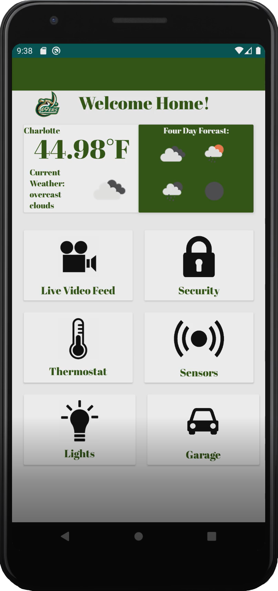
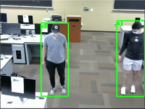
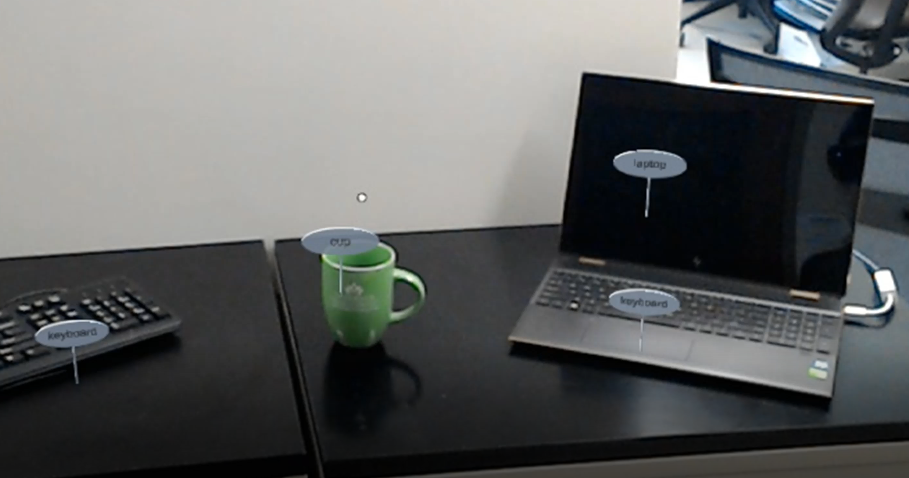

Hi, I'm Erich Choudhury.
I'm an engineer... I'm a musician...
Collaborative Research: Landscape Evolution in the McMurdo Dry Valleys
Created four, to-scale, 3-D models of Antarctic rocks using structure from motion techniques to harvest and aid in the presentation of data
collected by Dr. Eppes and her team in Antarctica. Edited, re-textured, and animated the final models in Blender then wrote a Python script
to obtain vertex locations in 3D space.
Paper

Microsoft AIRSIM and ROS Integration for Woodward Hall
Modeled Woodward Hall from UNC Charlotte in Unreal Engine 4 using Blender and integrated it with Microsoft AIRSIM. Created new ROS packages
to run AIRSIM from a Windows Subsystem for Linux to simulate drone flight. Implemented Octomap to create an occupancy grid of my model of Woodward
Hall in order to test a new SLAM algorithm
Paper
IOT Home Security System: 49er Sense
Created a fully functional Home Security system with a multi-user Android application, a home server, and a Raspberry Pi for connecting IOT devices.
The application allows the user to view real-time video from their home Raspberry Pi's onboard camera with motion-detection, their local weather, and interact with their
IOT devices, such as the thermostat, garage-doors, locks, lights, and fans.
Github Repo


COVID-19 Social Distancing Monitor
This project is a near real time COVID-19 social distance monitoring system the uses pre-existing libraries to help with estimating distances between objects and verifying social distancing guideline in order to create a safer, healthier public. This was completed for my Real-Time AI class.
Paper
Real-Time Object Detection and Localization using Microsoft HoloLens
Developed a networked Mixed Reality system utilized for real-time detection and localization of objects in the user’s environment
using YOLOv4. This was the capstone Senior Design project for my undergraduate engineering degree under the supervision of Dr. Tao Han.
ISL Site


VLSI 12-Bit Accumulator Layout
Designed, created a schematic, took
measurements, and developed a working schematic of a rising edge triggered 12-bit accumulator that
operates with inputs of 8-bit unsigned integers in Cadence. An accumulator is a short-term register for an
intermediate storage of arithmetic and logic data.
Want to chat? Connect with me!

|

|
|---|